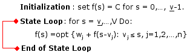
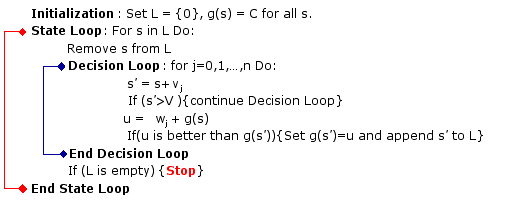
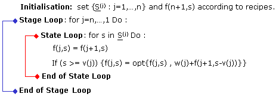
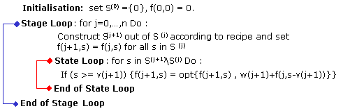
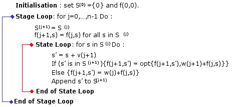

We have a knapsack of volume V and n types of items, (j=1,2,...,n). Items of type j have weight wj and volume vj. The objective is to determine how many items of each type should be placed in the knapsack so as to maximize the total weight of the knpsack without exceeding its volume (V).
We consider two popular versions of this famous problem, namely the 0-1 version and the unbounded (UB) version. The difference between these two versions is that in the case of the 0-1 version at most one item of each type can be selected. In the UB version, there is no upper bound on the number of items that can be selected from each type.
Here are the mathematical formulations of these two versions:
0-1 Version
z* := max z = w1x1 + w2x2 + ... + wnxn st. v1x1 + v2x2 + ... + vnxn <= V x1,x2, ... ,xn in {0,1} UB Version
z* := max z = w1x1 + w2x2 + ... + wnxn st. v1x1 + v2x2 + ... + vnxn <= V x1,x2, ... ,xn in {0,1,2,...} The symbol ":=" is used to denote a definition.
In fact, we shall consider the slightly more general formulation, namely
0-1 Version
z* := opt z = w1x1 + w2x2 + ... + wnxn st. v1x1 + v2x2 + ... + vnxn <= (=) V x1,x2, ... ,xn in {0,1} UB Version
z* := opt z = w1x1 + w2x2 + ... + wnxn st. v1x1 + v2x2 + ... + vnxn <= (=) V x1,x2, ... ,xn in {0,1,2,...} In other words, we shall consider four cases:
Case (max, <=): opt=max and the functional constraint is of the <= type Case (max, =): opt=max and the functional constraint is of the = type. Case (min, <=): opt=min and the functional constraint is of the <= type. Case (min, =): opt=min and the functional constraint is of the = type. The method we use to solve this problem is dynamic programming (DP). For each case we shall consider two types of DP algorithms, namely Pull and Push. These have been traditionally called Pull and Reach, respectively. We introduce the new terminology because we believe that it better reflects how these algorithms work (Remark: The connection with the Pull vs Push Internet communication paradigms is not accidental).
Let S denote the state space, namely the set of feasible volumes that can be generated by placing items in the knapsack. This set can be constructed iteratively as follows: Let
S(i+1) := {s': s' in S(i) and/or s' = s + vi, s in S(i), s + vi <= V, j=1,2,...,n}, j=0,1,2,...; S(0) := {0}. (1) Let k denote the smallest i such that S(i) = S(i+1). Then, S = S(k). Observe such a k exists because all the volumes (vj) are positive. In fact, it is clear that k cannot be greater than 1 + V/v, where v:= min {vj: j=1,2,...,n}. By construction S(i) consists of all volumes that can be composed out of no more than i items.
It is also clear that S will consist of nonnegative integers if the volumes {vj} are positive integers. Thus, it is convenient to assume the following:
- V is a strictly positive integer.
- The volumes, vj, j=1,2,...,n, are strictly positive integers.
Under these conditions S is a subset of V := {0,1,2,....,V}.
We do not impose any particular conditions on the weights (wj), so if desired they can be non-integer, even negative.
UB Version
Let
f(s) := optimal weight of a knapsack of volume s, (s in S). We are interested in the value of f(V) and the values of the decision variables {x1,...,xn} that yield this value.
f(s) = C , for all s < v (2) where
C = 0 , for Case(max,<=) and Case(min,<=). (3) C = -Infinity , for Case(max,=). C = Infinity , for Case(min,=). v := min {vj: j=1,2,...,n}. It is not difficult to show that f(s) satisfies the following DP functional equation:
Case(max,=), Case(min,=): f(s) = opt {wj + f(s - vj): vj <= s} , s >= v (4a) Case(max,<=), Case(min,<=): f(s) = opt {f(s-1), opt {wj + f(s - vj): vj <= s}} , s >= v (4b) Remarks:
- If f(s) is equal to Infinity or -Infinity then the problem is not feasible for V=s. This can happen only in Case(min,=) and Case(max.=), as in the other two cases the trivial degenerate solution {xj=0, ... , xn=0} is feasible for all s = 0,1,2,...,V.
- The functional equation (4b) can be simplified to (4a) under suitable conditions. For example, if all the weights (wj) are strictly positive, then (4a) is also valid for Case(max,<=).
- In the remainder of this section we regard the f(s-1) 'fix' in (4b) as a minor irritation of (4a). We shall thus focus exclusively on (4a).
- A brief explanation of the reasons for the differences between (4a) and (4b) is given in the Appendix.
We now describe two approaches for the solution of DP functional equations of the type specified in (4a)-(4b).
Pull
This approach is straight forward: to determine the value of f(s) in accordance with (4a), you position yourself at state s and pull the values of f(s-vj) that are needed on the right-hand side of the functional equation from where they are stored. The basic assumption here is therefore that all those f(s-vj) values have already been computed. This can be achieve, for instance, by solving the functional equation for s=0,1,2,...,V - in this order.
 Figure 1: Pull Approach for functional equation (4a).
Push
In many cases it is worth while to refine the State Loop so that only relevant states are generated. In particular, observe that if V and vj are large and n is small, then many of the states in {0,...,V} are infeasible in the sense that they are not equal to any (intermediate) volume obtained by placing items in the knapsack.
So an obvious improvement on this approach is to generate the set of feasible states, S, and then solve the functional equation only for these states. However, this approach is also wasteful because the computational effort required to generate S constitutes a substantial part of the over all computational effort required for solving the functional equation itself, and this effort will be repeated when the functional equation is solved.
This suggests the following: as we construct the set S according to (1) we can compute the values of wj+f(s) for all j such that s+vj<=V. The point is that (1) implies the following:
For every s'>0 in S there is a j in {1,2,...,n} such that f(s') = F(s,j) := wj + f(s) , s' = s + vj (5) So as we generate the state s'=s+vj according to (1) we can compute the F(s,j) = wj + f(s) values for all j such that s + vj<= V and use these values to update the respective 'current' values of f(s'). Observe, however, that when state s is generated for the first time in accordance with (1) the exact value of f(s) is typically not known yet - only an 'approximation' is known. So in the algorithm based on the Push approach we use an approximation g(s) to f(s) rather than f(s), where initially g(s) = C for all s in S. The important point is that when the algorithm terminates g(s) = f(s) for all s in S. We shall shortly see how this can be done.
The conceptual framework for the Push appraoch is then this: once we know the exact value of f(s) for some feasible state s, we broadcast this value so that the 'current' (perhaps not yet exact) values of f(s') can be updated for all s'= s + vj such that s'<V. The term Push is used to describe this metaphore. As in the case of the Pull/Push paradigm for Interent channels, these terms are used here to convey the distinction between client and server side operations.
There is one more point to consider: in the above framework we may generate a given state, say s, more than once and therefore will have to update the g(s') values of its successors s'=s+vj more than once. But why should we attempt the second updates if the current value of g(s) in is the same as the one we observed in the first update? The answer is that in fact there is no need to update the g(s') values of the sucessors of s unless there was an improvement in the value of g(s) since the previous update. So in short, we update the g(s') values of the successors of s only when g(s) had improved since the last update.
For this purpose we keep record of all the values of s whose g(s) have been improved since the last update and update only the g(s') values of the successors of these states. The initial list of such 'live' states is {0} and the procedure terminates when the set of 'live' states is empty. The set of 'live' set is updated as follows:
- A state s in in L is removed after the g(s') values of its successors are updated.
- A state s' is appended to L if its g(s') value was improved in the current update.
The following is a rough flowchart of the Push procedure for the functional equation specified in (4a):
 Figure 2: Push Approach for the functional equation (4a).
Note that the term 'better' incorporated in the second 'If' clause of the Decision Loop means 'less then' if opt=min and 'greater than' if opt =max.
If you have never experimented with "Push" type DP algorithms, you may wish to play a bit with a simple module we provide here for this purpose. The objective of this module is to illustrate how the state s is generated in the State Loop, how its sucessors s' are generated in the Decision Loop and how the g(s) values are updated.
The module dynamically displays the 'Live' states as the algorithms goes through the State Loop, as well as the states that have already been processed through this loop. The point to observe is that the same state might be processed through this loop more than once.
For obvious reasons the module handles only very small problems (n=10, V=299). It is restricted to Case (Max, <=).
0-1 Version
Because the decisions variables are restricted to the domain {0,1}, the DP formulation here is a bit more complicated, as now it is necessary to introduce - in addition to the state variable s - a stage variable, j =1,2,...,n.
To explain the Pull approach, let
f(j,s) := optimal weight of a knapsack of volume s, if only items i=j,...,n are allowed (j=1,2,...,n; s in V). We are interested in the value of f(1,V) and the values of the decision variables {x1,...,xn} that yield this value.
It is convenient to define f(j,s) for j=n+1 as follows:
Case(min,<=): f(n+1,s) = 0 for all s. (6) Case(max,<=): f(n+1,s) = 0 for all s. Case(min,=): f(n+1,0) = 0; f(n+1,s) = Infinity for all s>0. Case(max,=): f(n+1,0) = 0; f(n+1,s) = -Infinity for all s>0. It is not difficult to show that f(j,s) satisfies the following DP functional equation:
f(j,s) = f(j+1,s) , s < vj , s in V, j=1,...,n. (7) f(j,s) = opt {f(j+1,s) , wj + f(j+1, s - vj)} , s >= vj , s in V, j=1,...,n. We are interested in the value of f(1,V).
Note that for a given stage j > 1, only values of s in the range
S(j):= {max(0,V-Vj), ... ,V} , Vj:= v1+...+vj-1 (8) have to be considered, as it is clear that other values are not feasible at stage j. For j=1 let S(1): = {V}.
Obviously, if Vn+1 >= V then the problem is trivial, as the optimal values of {xj} can be determined independently for each j: if wj is positive set xj = 1, otherwise set xj = 0. In Case(min,<=), do it the other way around: set xj = 1 if wj is negative and set xj = 0 if wj is positive.
The following is then a rough outline of a DP algorithm based on this functional equation.
 Figure 3: Pull Approach for the 0-1 knapsack problem.
Note that if V is large and so are the volumes {vj}, then the set S(j) can be much smaller than S(j) in which case f(j,s) values are computed for many non-feasible values of (j,s) pairs.
To overcome this difficulty it might be worth while to use a 'forward' DP functional equation rather than a backward' one of the type we used above. To derive such an equation, let us first redefine the sets of feasibles states given in (1) to reflect the 0-1 constraints. So, let S(0) := {0} and
S(j+1) := {s + bvj+1: s in S(j), b in {0,1}, s + bvj+1 <= V}, j=0,1,2,...,n-1. (9) By construction, S(j) is the set of feasible values of x1v1 + ... + xjvj. Next let,
f(j,s) := optimal weight of a knapsack of volume s that is completely full, if only items k=1,...,j are allowed (j=1,2,...,n; s in S(j)). In Case(min,=) and Case(max,=) we are interested in the value of f(n,V) and in the other two cases we are interested in the value of opt{f(n,s): s in S(n)}. Also, we are interested in the the values of the decision variables {x1,...,xn} that yield the optimal value of the objecitve function.
It is convenient to define f(0,0):= 0.
It is not difficult to show that f(j,s) satisfies the following DP functional equation:
f(j+1,s) = f(j,s) , s < vj+1 , s in S(j+1), j=0,...,n-1. (10) f(j+1,s) = opt {f(j,s) , wj+1 + f(j, s - vj+1)} , s in S(j+1), s >= vj+1, j=0,...,n-1. The folllowing is a rough flowchart of a forward pulling algorithm based on this functional equation. Other than 'going forward' rather than backward, this type of algorithm is essentially similar to the pulling backward algorithm outlined above.
 Figure 4: Pull Forward Approach for the 0-1 knapsack problem.
Notice, however, that here we use the sets { S(j)} rather than {S(j)} . Often the construction of these sets is a substantial part of the overall effort and it is best done in conjunction with the solution of the functional equation, rather then as an initialization step.
Therefore it is often more efficient to generate the sets {Sj} on the fly and modify a bit the way the functional equation is solved. This is the Push approach.
Instead of computing the values of f(i,s) one at a time as suggested by (10) and the flowchard of the forward pulling algorithm, here the states in S(j+1)are generated one at a time and for each such state the f(j+1,s') values of its successors (s') are updated.
The following is a rough flowchart of the procedure.
 Figure 5: Push Approach for the 0-1 knapsack problem.
In Case(min,<=) and Case(max,<=) the optimal value of the objective function is obtain by optimizing f(n,s) over all s in S(n). Let S* := arg (opt{f(n,s): s in S(n)}).
The Knapee Module
We provide below access to an interactive module for experimenting with four DP algorithms:
- Pull approach to the UB problem (Figure 1)
- Push approach to the UB problem (Figure 2)
- Pull approach to the 0-1 problem (Figure 3)
- Push approach to the 0-1 problem (Figure 5)
Please read the following before you experiment with the module.
Important Comments
- There are several ways to speed up DP algorithms based on the above functional equations, eg :
We do plan to do this in due course. At present, however, the algorithms we use are not smart. In fact, they are quite dumb: they do not eliminate bad (dominated) items nor do they attempt to decrease the value of V.
- Eliminating "bad" items
- Decreasing the value of V
- Do not use large values for n and V before you check that your computer and/or browser can handle "large" problems. We suggest that you start your experiments with small problems, say (n=6, V=100), and then if necessary increase the size of the problem if your computer can handle larger problems.
- You are reminded that the objective of this module is to provide support for tutorials on the knapsack problem, not support for experimentation with large scale knapsack problems.
Observe that to completely specify an instance of the problem you have to fill-in the following details:
- Number of items, n
- Volume of knapsack, V
- Weights of items, w1,...,wn
- Volumes of items, v1,...,vn
- Type of functional constraint (either "=" or "<=")
- Optimality criterion (either min or max)
- Version of the problem (either 0-1 or UB)
- Method used (either Pull or Push)
We provide a spread-sheet like user interface. Use the 'n' button if you need a problem of a different size. When you are ready with your input, click the Solve button. The optimal decisions and the optimal value of the objective function will appear in the gold cells.
In the case of large problems (n > 10), the form will be similar except that the items will be arranged row-wise rather than column-wise.
It what follows we briefly explain the differences between the two DP functional equations, namely (4a) and (4b), of the UB version of the knpsack problem. More specifically, we explain the need to add the opt {0 , ... } term in the functional equation in Case(max,<=) and Case (min,<=). We also mention a slightly different way of handling the need for such a treatment.
Case(max,<=):
If all the weights (wj) are non-negative, then there is no need to modify (4a). It can be used as is in this case as well. If some of the weights are negative, then it could be that for some s > v we would have f(s)=0, namely it would be best to leave the knapsack empty. (4a) does not provide such an option, hence (4b).Case(min,<=):
>If all the weights (wj) are negative, then there is no need to modify (4a). It can be used as is in this case as well. If some of the weights are positive, then it could be that for some s > v we would have f(s)=0, namely it would be best to leave the knapsack empty. (4a) does not provide such an option, hence (4b).Another way of handling this minor irritation, as well as the initialization process (2)-(3), is through a dummy variable. Such a variable will have a volume vj=1 and weight wj=C, where
C = 0 , for Case(max,<=) and Case(min,<=). (A.1) C = -Infinity , for Case(max,=). C = Infinity , for Case(min,=). Observe that, not surprisingly, the values of C here are identical to those specified in (2)-(3). As before, if the absolute value of f(s) is equal to Infinity, then no combination of items yields volume s. In particular, if the absolute value of f(V) is equal to Infinity then the problem is not feasible. Naturally, this can only happen in Case(max,<=) and Case(min,<=), as in the other two cases there is always a feasible solution, namely x=(0, ... , 0).
Remark:
If you wonder why we bother to consider seemingly odd cases such as when some of the weights are negative, it is important that you realize that such cases are not odd at all. They appear in many important applications.